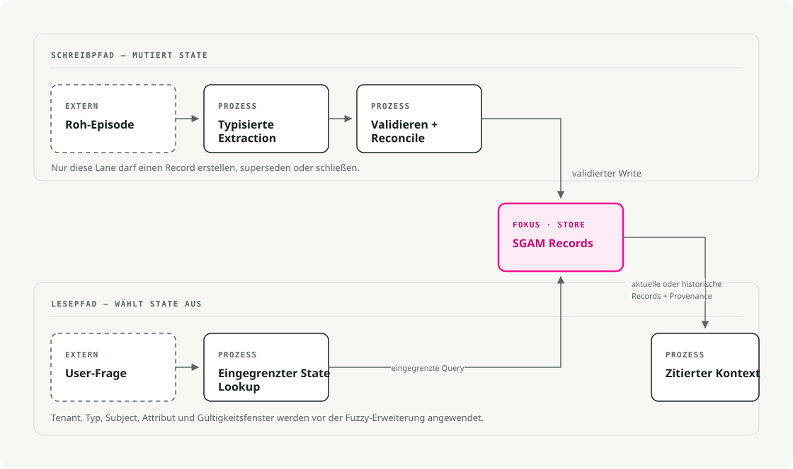

Automatische Übersetzung
Dieser Artikel wurde automatisch aus der englischen Originalversion übersetzt.
Speicher für KI-Agenten: Schema-gesteuertes, typisiertes Zustandsmanagement für langlaufende Systeme
Langlaufende Agenten scheitern häufig an veralteten Informationen. Das System merkt sich zwar einen Wert, verliert aber die Aktualisierung, die diesen ersetzt hat.
Stellen Sie sich einen Assistenten vor, der einer Nutzerin namens Mira zur Seite steht. In einem Gesprächsabschnitt gibt Mira an, dass ihre Frist für den Reisepass der 15. Juli sei. Später korrigiert sie dies auf den 30. Juni. Eine Vektorsuche kann beide Angaben finden, doch ein Speichersystem muss außerdem festhalten, dass die zweite Angabe die erste ersetzt hat.
Zusammenfassung: Behandeln Sie das langlebige Agenten-Memory als typisierten Anwendungs-Zustand. Extrahieren Sie mögliche Datensätze über eine Grenze mit strukturiertem Ausgabeformat, speichern Sie die Einträge unter Berücksichtigung von Tenant-Scope, Gültigkeitsfenstern, Überlagerungsmechanismen, Herkunftsinformationen sowie Schema-Versionierung und holen Sie anschließend den aktuellsten relevanten Teil über den Leseweg ab. Verwenden Sie Vektorabfragen zur ungenauen Wiederfindung von Informationen, betrachten Sie deren Ranglisten jedoch nicht als autoritatives Kriterium für veränderliche Fakten.
Die Falle des Kontextfensters
Das Kontextfenster stellt die für einen Modellaufruf verfügbaren Eingangsdaten dar. Eine Anwendung kann Nachrichten in spätere Aufrufe übertragen, doch das Modell entscheidet nicht selbst, welche alten Fakten weiterhin gültig sind oder wer sie einsehen darf.
Langlaufende Agenten müssen Präferenzen, Aufgabenstatus, Kundendaten, Entscheidungen bezüglich Tools, Compliance-Hinweise sowie frühere Fehler im Gedächtnis behalten. Die einfache Lösung besteht darin, Zusammenfassungen hinzuzufügen oder alte Notizen in einen Vektor-Speicher zu laden. Das funktioniert solange, bis sich einer der gespeicherten Fakten ändert.
Der Agent weist nun zwei Fristen für Pässe, zwei bevorzugte Formate oder zwei Entscheidungen bezüglich Projekten auf. Eine semantische Suche kann beide Informationen abrufen. Eine Zusammenfassung kann eine dieser Informationen überschreiben. Ein umfangreicher Kontext kann die veraltete Information neben der aktuellen anzeigen. Solche Konzepte ermöglichen zwar das Abrufen von Texten, können jedoch nicht sicherstellen, welche Information aktuell ist.
Der Vertrag muss konkrete Fragen beantworten:
- Was gilt derzeit?
- Was galt am 2. Juni?
- Wer hat das gesagt?
- Zu welchem Mieter gehört dies?
- Welche ältere Information wurde durch diese ersetzt?
- Kann ich sie löschen oder verfallen lassen?
Schema-Guided Agent Memory (SGAM) speichert diese Antworten als Felder und Beziehungen, anstatt sie implizit im Prosa-Text zu belassen.
Was SGAM bedeutet
In diesem Thema tauchen drei ähnliche Begriffe auf, die sich jedoch auf unterschiedliche Konzepte beziehen.
Schema-Guided Dialogue (SGD) ist das 2019 von Google veröffentlichte Datensatz für zielorientierte Dialogsysteme. Sein Schema beschreibt Service-APIs, Absichten sowie relevanten Datenfelder, sodass ein Dialogmodell den Zustand von Diensten verfolgen kann, die es zuvor nicht gesehen hat. Es handelt sich dabei um einen nützlichen Vorläufer, doch er bezieht sich auf Dialogdienste und nicht auf dauerhafte Agentenerinnerungen.
Schema-Guided Memory (SGM) ist der Forschungsbegriff, den Mei et al. in According to Me: Long-Term Personalized Referential Memory QA verwenden. In dieser Arbeit werden freitextbasierte Beschreibende Erinnerungen (DM) mit Schlüssel-Wert-Erinnerungseinträgen festen Schemas verglichen. Die Quelleninformation bleibt dieselbe; lediglich die Darstellung unterscheidet sich.
In diesem Artikel verwende ich Schema-Guided Agent Memory (SGAM) als Bezeichnung für ein Ingenieursmuster, bei dem Schemata die Schreibvorgänge, Aktualisierungen, das Abrufen sowie das Löschen steuern. Das Schema definiert den Anwendungsstatus – anstatt lediglich eine Notiz zu formatieren.
ATM-Bench veranschaulicht, warum die Repräsentation von großer Bedeutung ist. Er nutzt etwa vier Jahre an personenbezogenen Daten aus E-Mails, Bildern und Videos. Die Fragen erfordern persönliche Bezüge, Standortangaben, mehrere Beweismittel sowie Aktualisierungen im Laufe der Zeit. Die Leistung sinkt bei der harten Aufteilung, während SGM im Vergleich zu DM verbessert wird – schließlich kann der Abrufmechanismus Felder wie Zeit, Quelle, Standort, Entitäten und Tags direkt abrufen.
SGM versus DM beantwortet eine Frage zur Speicherung: Soll der Speicher als freier Text bleiben oder sollen benannte Felder verwendet werden? Ein Produktionsagent hat vor der Speicherung ein weiteres Problem zu bewältigen: Er muss aus einer unstrukturierten Konversation auf eine vorgeschlagene Speicheraktualisierung schließen. Schema-Guided Reasoning (SGR) definiert diesen Entscheidungsweg: Die Beweismittel werden überprüft, Subjekt und Attribut identifiziert, geprüft, ob die Tatsache den bestehenden Zustand ändert, anschließend ein Kandidat für eine Schreiboperation erstellt. SGAM wendet nach diesem Modellaufruf die Regeln zur Speicherung und zum Lebenszyklus an.
SGR ist das Schreibtor
Structured Output (SO) stellt die Struktur des Kandidat-Objekts sicher. Schema-Guided Reasoning (SGR) geht noch einen Schritt weiter, indem es die Schritte sowie die Reihenfolge kodiert, die das Modell befolgen muss, um zu diesem Kandidaten zu gelangen. Schema-Guided Agent Memory (SGAM) übernimmt nach dem Modellaufruf und verwaltet den Kandidaten als dauerhaften Zustand.
Ich habe bereits mehrfach über SGR geschrieben. Die ursprüngliche vLLM und XGrammar Artikel der Mechanismus wurde erläutert. Spätere Beiträge wendeten ihn an. strukturierte Bewertungskriterien, Planer und Router, und reproduzierbare RAG-BewertungskriterienBei jedem Fall beschrieb das Schema sowohl die Zwischenergebnisse des Reasonings als auch die endgültige Entscheidung. Structured Output sorgt dafür, dass dieses Schema während der Dekodierung berücksichtigt wird.
Ein Urteil, eine Vorgehensweise oder ein Plan verfällt in der Regel mit der aktuellen Anfrage. Ein weiterer Ausführungsvorgang kann den entsprechenden Speicherinhalt Tage später abrufen oder ihn zur Auswahl einer Tool-Aufruf verwenden. Diese längere Lebensdauer erfordert Speicherrichtlinien, die von SGR nicht bereitgestellt werden.
SGR beschränkt einen Modellaufruf durch Definition der Reasoning-Topologie. Bei einem Speicherzugriff kann das Schema Quellenbelege, normalisierte Subjekte und Attribute sowie einen Vergleich mit dem aktuellen Zustand erforderlich machen, bevor eine Aktualisierung vorgeschlagen wird. Pydantic oder JSON Schema beschreiben diesen Ablauf. Provider-eigene Strukturen wie Structured Output oder guidierte Dekodierungsmechanismen wie XGrammar verhindern, dass das Modell Felder überspringt oder eine andere Struktur zurückgibt.
Dies garantiert zwar nicht, dass das Ergebnis korrekt ist, doch es macht den erforderlichen Entscheidungsweg explizit und überprüfbar, anstatt ein Endobjekt ohne Angabe dazu zu akzeptieren, wie das Modell dorthin gelangt ist.
SGAM entscheidet darüber, was nach dem Entstehen dieses Objekts geschieht: Soll es gespeichert werden? Überlagert es ältere Informationen? Welcher Benutzer kann es einsehen? Ist es aktuell oder historisch? Welches Quellenereignis stützt es?
Alle drei verwenden Schemata, weshalb sie leicht mit einem und demselben Mechanismus verwechselt werden können. Sie arbeiten auf unterschiedlichen Ebenen: SO steuert die erzeugte Struktur, SGR definiert den Weg von den Belegen zur Entscheidung und SGAM kontrolliert den persistenten Zustand.
| Dimension | SO | SGR | SGAM |
|---|---|---|---|
| Zweck | Geben Sie ein Objekt zurück, das einem Schema entspricht. | Leiten Sie das Modell entlang eines vordefinierten Schlussfolgerungsweges. | Nach dem Aufruf des Modells die dauerhafte Speicherung verwalten |
| Bereich | Eine generierte Antwort | Ein Reasoning- und Entscheidungspfad bei einem Modellaufruf | Daten, die zwischen Aufrufen, Sitzungen und Ausführungen verwendet werden |
| Schema-Rolle | Definiert die Ausgabefelder, Typen sowie zulässigen Werte | Definiert die Zwischenschritte des abstrakten Denkens sowie die endgültige Entscheidung. | Definiert gespeicherte Datensätze, Beziehungen sowie den Lebenszyklus |
| Durchsetzung | Ausgabe wegen fehlerhafter Schema-Struktur in eingeschränkten Dekodierungsblöcken | Verwendet SO, um jede deklarierte Phase sowie die endgültige Entscheidung zu erzwingen. | Anwendungsvalidierung, Datenbankbeschränkungen und Konfliktregeln |
| Lebensdauer | Der aktuelle Aufruf, es sei denn, die Anwendung speichert das Objekt. | Der Abwägungstrack wird in der Regel nach der Entscheidungsfindung verworfen. | Bleibt bestehen, bis es aktualisiert, abgelaufen oder gelöscht wird. |
| Fehlermodus | Gültige Form mit falscher Bedeutung | Die erforderlichen Schritte sind vorhanden, doch die Herleitung könnte dennoch fehlerhaft sein. | Veralteter, verschmutzter, nicht abgegrenzter oder nicht überprüfbarer Zustand |
Auf dem Schreibweg ist die Abfolge wie folgt:
SGR reasoning schema + Structured Output -> candidate write -> SGAM policy and persistence
SGR leitet das Modell entlang des im Voraus definierten Extraktions- und Entscheidungsweges. Structured Output stellt sicher, dass dieser Weg eingehalten wird, und erzeugt die entsprechenden Ergebnisse. MemoryDelta Objekt. Anschließend führt SGAM Mieterprüfungen, Konfliktrichtlinien, Gültigkeitsfenster, Herkunftsinformationen sowie Aufbewahrungsregeln durch, bevor es den Delta-Änderungsvorschlag abspeichert.
Der folgende veranschaulichende Auszug aus memory_models.py definiert das Objekt, das von der Extraktion an den SGAM-Schreibdienst übergeben wird:
from datetime import datetime
from pydantic import BaseModel, Field
class MemoryDelta(BaseModel):
tenant_id: str = Field(description="Isolation boundary, e.g. acme")
subject: str = Field(description="Normalized entity ID, e.g. mira")
attribute: str = Field(description="Property being updated")
value: str = Field(description="New value")
valid_from: datetime
source_episode_id: str
MemoryDelta fängt das ein, was das Modell extrahiert hat. Der SGAM-Schreibdienst entscheidet weiterhin, ob er die Daten ablehnt, zusammenführt oder speichert.
Die beiden Flüsse
SGAM verfügt über einen Schreibpfad und einen Lesepfad. Nur der Schreibpfad ändert den gespeicherten Zustand. Der Lesepfad wählt die für die aktuelle Anfrage relevanten Datensätze aus.
Der Eingabepfad ist der Schreibpfad:
- Erfassen Sie eine rohe Episode aus Nachrichten, Tool-Ergebnissen oder Geschäftsereignissen.
- Extrahieren Sie typisierte Kandidaten über die strukturierte Ausgabe.
- Überprüfen Sie das Schema und lehnen Sie fehlerhafte Eingaben ab.
- Klären Sie Konflikte auf, schließen Sie veraltete Fakten und bewahren Sie die Herkunftsnachweise auf.
- Speichern Sie den Datensatz im SGAM-Speicher ab.
Der Anfragenpfad ist der Lesepfad:
- Beginnen Sie mit der Anfrage des Benutzers.
- Entscheiden Sie, ob für die Anfrage der aktuelle Zustand oder ein Zustand zu einem bestimmten Zeitpunkt erforderlich ist.
- Filtern Sie nach Mieter, Speichertyp, Thema, Attribut sowie Gültigkeitsfenster.
- Fügen Sie eine Vektor- oder Graphenerweiterung nur dann hinzu, wenn eine präzise Zustandsabfrage nicht ausreicht.
- Erstellen Sie den kleinstmöglichen zitierten Kontext für das Modell.

Lesen Sie dieses Diagramm von links nach rechts in zwei Kanälen. Der obere Kanal schreibt in den Speicher, und der untere Kanal liest daraus. Beide verwenden denselben Speicherzugriff.
Was gehört in ein Speicherschema
Ein minimales SGAM-Eintrag benötigt mehr als text.
tenant_id
memory_id
subject
attribute
value
memory_type
schema_version
valid_from
valid_to
supersedes_memory_id
source_episode_id
confidence
retention_policy
Durch diese Felder kann ein neuer Fristtermin für einen Reisepass den vorherigen Termin außer Kraft setzen, ohne die Historie zu löschen. Derselbe Tabellendatensatz ermöglicht es, sowohl aktuelle als auch zeitpunktbezogene Abfragen zu beantworten und das Ergebnis anschließend auf das entsprechende ursprüngliche Ereignis zurückzuverfolgen. schema_version unterstützt Migrationen, während retention_policy teilt den Löschvorgängen mit, welche weiteren Elemente sie entfernen müssen.
RAG holt Dokumente ab. SGAM verwaltet den veränderbaren Zustand.
Die Vektorsuche gehört weiterhin zum System für ungenaues Abrufen, Clustering und Erweiterung. Doch der aktuelle Wert von mira.passport_deadline Es muss aus einem begrenzten Speicherrecord stammen und nicht einfach aus demjenigen Datensatz, der zufällig an erster Stelle liegt.
Ein Beispiel für veraltete Informationen
Vergleichen Sie zwei Darstellungen derselben Episoden: eine DM-Baseline und ein SGAM-Register.
e1: Mira prefers concise answers. Her passport deadline is 2026-07-15.
e2: Mira corrected the deadline. It is now 2026-06-30.
Ein DM-Baseline behält beide Episoden als Freitext bei, sodass eine Textsuche Ergebnisse liefern kann. e1 weil es die richtigen Wörter enthält. SGAM extrahiert aus jeder Episode eine eingegebene Tatsache, die nach Mieter, Thema und Attribut klassifiziert wird. Es sollte diese zurückgeben. e2 als aktueller Zustand beibehalten e1 für eine historische Abfrage.
Die folgende Funktion ist Code für den SGAM-Schreibpfad. Sie würde in einem Store-Modul wie diesem untergebracht sein. sgam_store.py. DM verfügt über kein Äquivalent, da es für jedes Attribut keine aktuelle Zeile speichert. Bevor der Aufrufer einen Ersatz einfügt, schließt diese Funktion die aktuelle Zeile:
def close_previous_fact(db: sqlite3.Connection, fact: MemoryFact) -> int | None:
row = db.execute(
"""
select fact_id
from memory_facts
where tenant_id = ?
and subject = ?
and attribute = ?
and valid_to is null
order by valid_from desc
limit 1
""",
(fact.tenant_id, fact.subject, fact.attribute),
).fetchone()
if not row:
return None
db.execute(
"update memory_facts set valid_to = ? where fact_id = ?",
(fact.valid_from, row["fact_id"]),
)
return int(row["fact_id"])
Wenn e2 ist erreicht, setzt die Funktion valid_to über den aus dem Text extrahierten Faktor e1 zur e2die Zeitstempel. Der Aufrufer fügt anschließend die neue Tatsache mit einem offenen Eintrag ein. valid_to. DM verfügt über keinen entsprechenden AktualisierungsSchritt, wodurch der alte Text weiterhin eine höhere Rangfolge als die Korrektur einnehmen kann.
Das Ausführen von Abfragen zu aktuellen und historischen Fristen gegenüber beiden Darstellungen liefert unterschiedliche Ergebnisse:
Naive text memory:
returned episode: e1 -> passport deadline is 2026-07-15
SGAM current state:
mira.passport_deadline = 2026-06-30
valid_from=2026-06-03T10:00:00Z, source=e2
SGAM point-in-time state:
on 2026-06-02, mira.passport_deadline = 2026-07-15
In der Produktion sollte diese Transaktion mit einer strukturierten Extraktion auf dem Schreibweg kombiniert werden. Die Datenbanktransaktion aktualisiert die zeitliche Gültigkeit. Das Modell extrahiert einen Kandidatenfakt, entscheidet jedoch nicht, welche gespeicherte Zeile weiterhin aktuell bleibt.
| Tool oder Framework | Hauptspeicherschicht | Zeitliche Verarbeitung | Schema-Mechanismus | Praktische Nische |
|---|---|---|---|---|
| Zep / Graphiti | Neo4j, FalkorDB, Neptune sowie Unterstützung für veraltete Kuzu-Systeme | Hoch | Pydantic-Entitäten und Kantenarten, zeitbasierte Kanten, Provenienz | Zeitgraphen-Speicher |
| LangGraph / LangMem | LangGraph-Speicher, Speicher mit Postgres-Unterstützung | Mittel | JSON speichert Profile sowie die Extraktion von Sammlungen mittels Pydantic. | Agenten-Apps, die bereits auf LangGraph basieren |
| Mem0 | Gemanagter Stack mit Valkey-/Redis-/Vector-Backends in OSS-Umgebungen | Mittel | Arten von Speicher, benutzerdefinierte Kategorien, Extraktionsanweisungen | User-, Agent- und Sitzungsspeicher als Service |
| Letta / MemGPT | Datenbankgestützter Agentenzustand und Speicherblokke | Niedrig | Bearbeitbare, beschriftete Speicherblöcke | Zustandsbasierte Agenten mit kontextbezogener Verwaltung im Stil von Betriebssystemen |
| Cognee | Graph-, Vektor- und relationale Backend-Systeme | Mittel | Ontologieorientierte Extraktion und Validierung | Enterprise-Wissensgraphen-Speicher |
| LlamaIndex-Property-Graph | Property Graph-Datenbanken sowie Vektordatenspeicher | Niedrig bis mittel | SchemaLLMPathExtractor mit zulässigen Entitäten und Beziehungen |
Graphextraktion aus Dokumenten und Spuren |
Graphiti stellt eine offene Quellcode-Implementierung relationeller, zeitbasierter Speicherstrukturen dar. Sie verfolgt die Änderungen von Fakten, speichert Verweise auf die ursprünglichen Datensätze und unterstützt hybride Suchverfahren. LangGraph trennt die Checkpoints der einzelnen Threads von den gespeicherten Daten zwischen den Threads. Mem0 fasst alle Speicheroperationen als verwalteten Service zusammen. Letta verwendet editierbare Kontextblöcke anstelle eines SGAM-Systems auf Feldebene, betrachtet den Zustand des Agents jedoch weiterhin als persistente Daten.
Beginnen Sie mit dem Datenmodell. Wenn die genaue Abfrage von Fakten die Hauptaufgabe ist, reicht in der Regel eine relationale Tabelle mit JSON-Daten, Validitätsspalten, Tenant-Indizes sowie einem Vector-Sidecar aus. Fügen Sie ein Graphenmodell nur dann hinzu, wenn das Durchlaufen von Beziehungen zum Funktionsumfang des Produkts gehört – und nicht deshalb, weil eine Demonstration mit Graphen besonders beeindruckend aussieht.
Implementierungsreihenfolge
Erst muss entschieden werden, was das Produkt sich merken darf. Die Wahl zwischen Graph und Vektor erfolgt anschließend.
Ein Support-Agent kann sich den Account-Tier, offene Fälle sowie dauerhafte Kontaktoptionen merken. Er sollte jedoch nicht jeden frustrierten Nutzer automatisch in einen Profilzustand versetzen. Ein Coding-Agent kann sich Repository-Konventionen sowie ungelöste Aufgaben merken. Er sollte keine privaten Notizen ewig speichern, nur weil diese einmal abgerufen wurden.
Beginnen Sie mit dem Schreibweg und betrachten Sie das Gedächtnis als eine kleine Zustandsänderung:
- Benennen Sie den Typ des Gedächtnisses, das Thema, den Tenant-Bereich sowie die Aufbewahrungsklasse.
- Extrahieren Sie Kandidateneinträge mit strukturiertem Ausgabeformat.
- Überprüfen Sie die Daten mit Pydantic oder der Schema-Schicht, die bereits in Ihrem Stack verwendet wird.
- Lösen Sie Konflikte vor dem Einfügen, insbesondere ob der neue Eintrag den alten ersetzt.
- Bewahren Sie einen Quellenzeiger zum ursprünglichen Ereignis, Tool-Ergebnis, Datei, Ticket oder Benutzerbestätigung auf, aus denen der Eintrag entstanden ist.
- Speichern Sie die Schema-Version zusammen mit jedem Eintrag – anstatt sie nur im Anwendungscode zu hinterlegen.
Der erste SGAM-Speicher kann eine relationale Tabelle mit einer JSON-Spalte sowie einigen Indizes sein. Ein Graph wird nützlich, wenn das Produkt Beziehungen wie Kunde-zu-Konto, Konto-zu-Richtlinie, Aufgabe-zu-Objekt oder Projekt-zu-Entscheidung durchlaufen muss.
Schnellweg und Hintergrundschreibvorgänge
Eine sofortige Extraktion lohnt sich, wenn der nächste Schritt von dem neuen Gedächtnisinhalt abhängt. Wenn der Nutzer sagt „Merken Sie sich, dass ich kurze Antworten bevorzuge“, sollte das System nicht auf einen täglichen Batch-Vorgang warten, um anders zu handeln.
Die meisten Schritte erfordern keine sofortige Aufzeichnung. Speichern Sie die rohe Episode zusammen mit Metadaten zum Tenant, zur Sitzung und zum Tool und lassen Sie anschließend einen Hintergrundprozess später potenzielle Ergebnisse extrahieren. Durch konsolidierende Verfahren auf Basis von Wiederholungen puffert der Prozess schwache Signale und führt ein Fakt nur dann ein, wenn ähnliche Belege sich wiederholen oder der Benutzer dies bestätigt. Dadurch entsteht eine Verzögerung in der Aktualität. Dies ist akzeptabel bei Szenarien wie „Der Benutzer bittet häufig um CSV-Exporte“, aber riskant bei Situationen wie „Der Kunde hat die Lieferadresse geändert“.
Stellen Sie den Leseweg deterministisch sicher. Zuerst müssen Scope und Gültigkeit des Tenants überprüft werden; erst danach darf eine ungenaue Suche eingesetzt werden, sofern sie nützlichen Kontext liefern kann.
- Filtern nach Tenant, Speichertyp und Gültigkeitsfenster.
- Zuerst den exakten strukturierten Zustand abrufen, anschließend semantische Nachbarn.
- Für unterstützende Belege, verwandte Entitäten und Beispiele Vektor- oder Graphenerweiterungen nutzen – nicht jedoch als Autorität für aktuelle Fakten.
- Den kleinstmöglichen zitierten Kontext zusammenstellen, der die Frage beantworten kann.
Betrachten Sie Schema-Migrationen als Produktarbeit. Wenn sich ein Speicherdatensatz verändert, ändert sich auch das Verhalten des Agents: Was er sich merken kann, was er zitieren kann, was er löschen kann sowie welche alten Fakten weiterhin als aktuell gelten. Halten Sie Migrationsskripte, Rückfüllvorgänge, doppelte Lesefenster sowie Löschverhalten im selben Release-Plan wie die Produktänderung.
Wann SGAM die Komplexität rechtfertigt
Verwenden Sie SGAM, wenn sich Fakten im Laufe der Zeit ändern können:
- Benutzerpräferenzen, die aktualisiert oder widerrufen werden können
- Kundendaten oder Kontoinformationen mit Prüfanforderungen
- Zustand von Aufgaben bei langlaufenden Assistenten
- Projektgedächtnis des Coding-Agents
- Gemeinsamer Zustand mehrerer Agenten
- Konformitätshinweise, bei denen die Herkunft entscheidend ist
- Zeitbezogene Fragen wie „Was glaubten wir vor der Migration?“
SGAM ist übertrieben, wenn das Gedächtnis kurzlebig, explorativ oder kostengünstig neu berechnbar ist. Wenn ein Agent nur wenige Kontinuitätsschritte benötigt, reichen ein Checkpoint sowie ein gekürzter Nachrichtenverlauf aus. Für statische Dokumentenqualitätsprüfungen könnte allein RAG ausreichen. Und wenn das Domänenschema täglich ändert, verlangsamt typisiertes Gedächtnis das Team.
Bewertungskontrollliste
Es reicht nicht aus, die endgültige Antwort zu lesen. Ein Gedächtnissystem kann eine plausibel klingende Antwort liefern, nachdem es eine falsche Information geschrieben hat, eine veraltete abgerufen hat oder eine Grenze zwischen Tenant-Instanzen überschritten hat.
Ich verwende dieselbe schrittweise Aufteilung wie in meinem... Artikel zur Bewertung von RAG-Systemen. Messen Sie den Punkt, an dem ein Fehler auftreten kann, anstatt die Bewertung auf den generierten Text zu beschränken. Die Trace-Diskipline aus der Artikel zur Bewertung von Agenten Dies gilt ebenfalls, da ein Speicherfehler in der Regel bereits im Laufverlauf sichtbar wird, noch bevor eine Lösung erzielt wird.
Ich würde SGAM unter Verwendung von Replay-Tests überprüfen. Dabei werden feste Episodenfolgen in den Speicherschreiber eingespeist, nach jedem bedeutenden Zug das Protokoll überprüft und anschließend Anfragen zum aktuellen Zustand sowie zu bestimmten Zeitpunkten an den resultierenden Speicher gerichtet.
| Schicht | Der Fehler, nach dem Sie suchen | Messgrößen |
|---|---|---|
| Erstellung der Extraktion | Der Agent hat eine Tatsache übersehen, eine erfunden oder eine ungültige Form erzeugt. | Schema-konforme Schreibrate, Extraktionsgenauigkeit/Rückrufrate, Abdeckung der Quelldatenepisoden |
| Konfliktverwaltung | Ein veralteter Wert blieb weiterhin gültig oder ein korrekter alter Wert wurde überschrieben. | Korrektheit bei Überlagerung, Duplikatrate, Korrektheit bei Invalidation von veralteten Fakten |
| Isolierung und Richtlinien | Gedächtnisleck zwischen Benutzern oder Überdauerung über den vorgesehenen Zeitrahmen hinaus. | Fehler bei der Isolierung von Tenant-Daten, Korrektheit der Löschvorgänge, Einhaltung von Aufbewahrungsrichtlinien |
| Datenabruf | Das richtige Datensatz existiert, doch der Leser hat ihn nicht abgerufen. | Genauigkeit im aktuellen Zustand, Genauigkeit zu einem bestimmten Zeitpunkt, Recall@k für Speicherdatensätze |
| Antwortverankerung | Die Antwort nutzte Speicher ohne entsprechende Unterstützung oder bezog sich auf die falsche Quelle. | Stellen Sie einen Support-Antrag bezüglich der Quelldatenepisoden, der Genauigkeit der Zitierungen sowie der Richtigkeit der Konfliktlösung. |
| Operationen | Der Speicherpfad ist zu langsam, zu veraltet oder zu ressourcenintensiv. | p95-Schreibverzögerung, Verzögerung durch Datenveraltetheit, Leseverzögerung, Kosten pro Abfrage |
Benchmarks wie zum Beispiel LoCoMo, LongMemEval, und ATM-Bench-Testumgebung Stellen Sie öffentliche Testfälle zur Verfügung. Diese ersetzen keine umfassende Domänen-Testsuite. Ein Coding-Assistent, ein Kundenservice-Bot sowie ein Compliance-Copilot benötigen jeweils unterschiedliche Schemata, Filter, Speicherungsvorschriften und Fehlerprüfungen.
Einschränkungen
SGAM ist meine Bezeichnung für ein Muster und nicht für ein Standard. Bestehende Projekte gehen bei der Lösung des Problems unterschiedlich vor. LangGraph-Memory und LangMem Beschreiben Sie kurzfristige und langfristige Speicherstrukturen, Profile, Sammlungen, Schreibvorgänge auf Hot-Paths sowie Hintergrund-Geräte zum Verwalten von Speicherressourcen. Zep Graphiti verwendet den Begriff temporärer Kontextgraph. Letta bewahrt editierbare Speicherblöcke auf, während Mem0 bietet eine verwaltete Speicherschicht. Microsoft Graph RAG, LlamaIndex-Property-Graphs sowie Cognee-Frame-Strukturen modellieren jeweils spezifische Aspekte des Problems als Wissensgraphen.
Ein Benutzerprofil, ein Episodenprotokoll, ein Dokumentengraph sowie ein vom Agenten editierbarer Speicherblock adressieren unterschiedliche Anforderungen bei der Abfrage und Aktualisierung von Daten. SGAM reserviere ich für dauerhaften Speicher, der den aktuellen Anwendungsstatus darstellt und daher ein Schema, Validitätsprüfungen, Herkunftsangaben, Konfliktbewältigung, Retentionsregeln sowie Migrationsmechanismen erfordert.
Auch typisierte Speicherstrukturen können fehlerhaft sein. Ein Schema erleichtert zwar die Überprüfung fehlerhafter Schreibvorgänge, macht diese aber nicht automatisch zuverlässig. Es bleibt weiterhin notwendig, die Quellen zu vertrauen, sensible Fakten durch Benutzerbestätigung zu überprüfen, Konfliktpolitiken anzuwenden, Daten zu löschen sowie ständig zu überwachen.
Schema-Migration ist aufwendig. Sobald Daten zum Anwendungsstatus werden, sind Versionierung, Rückfüllung alter Datensätze sowie das Löschen von Inhalten in Ihrer Verantwortung. Vermeiden Sie diese Aufwände – sonst überdauern alte Datensätze oft die Semantik oder Retentionsrichtlinien, die ursprünglich für sie festgelegt wurden.
Wesentliche Erkenntnisse
- Das Kontextfenster stellt die Eingaben für den aktuellen Turn bereit. Für eine langlebige Agentenmemorie ist ein separates Zustandskontrakt erforderlich.
- SGR definiert den Schlussweg zu einem potenziellen Schreibvorgang, Structured Output sorgt für seine Einhaltung, und SGAM verwaltet die Aufzeichnung nach dem Commit.
- Vektorbasiertes Abrufen ist nützlich, doch aktuelle Fakten benötigen Angaben zu ihrem Gültigkeitsbereich, Validität, Überlagerung sowie Herkunft.
- Beginnen Sie mit einem einfachen relationellen oder JSON-basierten Memorielogbuch, bevor Sie auf Graphstrukturen zurückgreifen.
- Bewerten Sie die Memorie anhand der Richtigkeit der Schreibvorgänge, der zeitlichen Abruffähigkeit, der Verankerung in der Realität, der Isolation der Benutzer sowie des Löschverhaltens.
Referenzen Meiner Ansicht nach: Langfristige personalisierte referenzielle Merkmalsüberprüfung - Der Artikel von Mei et al., in dem ATM-Bench sowie Schema-Guided Memory vorgestellt werden. Auf dem Weg zu skalierbaren Mehrdomänen-Dialogagenten: Das schemabasierte Dialogdatensatz - Der Artikel von Rastogi et al. zum SGD-Datensatz. LongMemEval: Benchmarking von Chat-Assistenten hinsichtlich ihrer langfristigen interaktiven Speicherkapazität - Der Benchmark von Wu et al. für Langzeitgedächtnisfähigkeiten. Graphiti: Temporale Kontextgraphen für KI-Agenten erstellen
- Zep: Eine Architektur für temporale Wissensgraphen zur Speicherung von Agentenerinnerungen
- Überblick über die Mem0-Plattform
- Mem0: Entwicklung von für die Produktion geeigneten KI-Agenten mit skalierbarer Langzeitmerkfähigkeit
- Überblick über den Speicherbedarf von LangGraph
- LangGraph-Persistenz
- LangMem-Dokumentation
- Letta: Einführung in Zustandsbasierte Agenten
- Microsoft GraphRAG-Dokumentation
- LlamaIndex: Verwendung eines Eigenschaftsgraphen-Index
- Cognee-Dokumentation
- Dokumentation zur Validierung von Pydantic-Modellen
- Python-Schnittstelle zu SQLite3